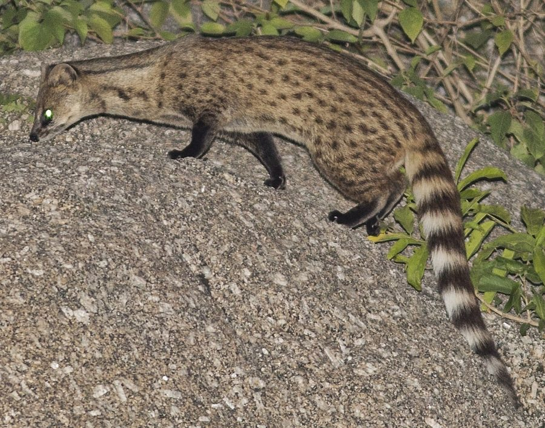

कस्तूरी बिलावSmall Indian Civet
Viverricula indica · Viverridae · MAM-0012

- Scientific name
- Viverricula indica (É.Geoffroy Saint-Hilaire, 1803)
- Family
- Viverridae
- Hindi
- कस्तूरी बिलाव
- Status here
- native
- IUCN
- LC
When to look कब देखें
Present all year.
कस्तूरी बिलाव / Small Indian Civet
Viverricula indica (É.Geoffroy Saint-Hilaire, 1803) — Viverridae
कस्तूरी बिलाव (स्मॉल इंडियन सिवेट) — पूर्वी उत्तर प्रदेश के घास के मैदानों, झाड़ियों और गन्ने के खेतों में पाया जाने वाला एक मध्यम आकार का निवासी जंगली मांसाहारी स्तनधारी जीव है। इसे स्थानीय बोलचाल में "कस्तूरी बिल्ली" या "मुश्क बिलाव" भी कहा जाता है। यह पूरी तरह से रात के समय सक्रिय (nocturnal) होने वाला जीव है। इसका शरीर भूरे-पीले रंग का होता है जिस पर काले रंग के छोटे-छोटे धब्बे बने होते हैं, और इसकी पूँछ पर काले व सफेद रंग के 6 से 8 छल्ले (stripes) होते हैं। यह वृक्षवासी ताड़ बिलाव (Common Palm Civet, जो पेड़ों पर रहता है) के विपरीत, मुख्य रूप से ज़मीन पर रहने वाला (terrestrial) जीव है। इसके गुदा ग्रंथियों से निकलने वाले मुश्क (civet musk) जैसी तीव्र सुगंध के कारण इसे "कस्तूरी बिलाव" कहा जाता है। यह चूहे, गिलहरी, छोटे सांप और कीड़े खाकर प्राकृतिक संतुलन बनाए रखता है।
Quick Identification त्वरित पहचान
| Feature | Description |
|---|---|
| Size | Cat-sized carnivore; head-body length 50–65 cm; tail length 35–40 cm; weight 2–4 kg |
| Coat Pattern | Coarse brownish-grey coat; flanks marked with small black spots in rows |
| Dorsal Stripes | 4–5 longitudinal black bands running down the back from neck to tail base |
| Tail | Long, cylindrical tail marked with 6–8 distinct alternating black and white rings |
| Head | Narrow, pointed muzzle with small, rounded, upright ears; eyes reflect green in flashlights |
| Scent Glands | Possesses perineal scent glands producing a strong, musky secretion |
Field tip: Look for footprints in sandy-clay soils along sugarcane field margins or village ponds at dawn. The track shows five clawed toes, smaller than a dog's and more clawed than a cat's. At night, flashlights may catch its long, low profile with a striped tail slinking through the ground vegetation.
Morphology आकारिकी
Biometrics (typical measurements for adult specimens in local fields):
| Measurement | Range |
|---|---|
| Head-body length | 50–65 cm |
| Tail length | 35–40 cm |
| Weight | 2.0–4.0 kg |
Body details: The body is slender and elongated with short legs. The head is narrow with a sharp, pointed muzzle. The ears are small and positioned close together on the skull. The fur is coarse and varies from yellowish-grey to brownish-grey. The back has 4–5 dark longitudinal bands. The sides of the body are covered with distinct rows of small black spots. The throat and chest are off-white. The long, tapered tail is banded with 6–8 alternating black and white rings. The paws have five toes with retractable claws. Both sexes possess highly developed perineal scent glands near the anus that secrete a yellow, waxy musk.
Behaviour & Ecology व्यवहार और पारिस्थितिकी
Terrestrial nocturnal hunter.
- Ground-dwelling habit: Unlike palm civets, this species is almost entirely terrestrial, foraging on the ground. It nests in abandoned fox or porcupine burrows, under hollow logs, or within thick patches of tall grass, rarely climbing trees.
- Solitary foraging: Strictly solitary and nocturnal, leaving its den after dusk. It searches for prey by walking slowly, using its keen sense of smell and hearing to detect movements in the grass.
- Scent marking: Rubs its musky secretions onto tree trunks, rocks, and clay field bunds to define its home range and advertise reproductive availability to other civets.
Ecological Role पारिस्थितिक भूमिका
Pest controller and seed disperser.
- Rodent regulation: Feeds heavily on agricultural rodents (such as [MAM-0013 Lesser Bandicoot Rat]), helping control crop-damaging populations in sugarcane fields.
- Seed dispersal: Frequently eats wild berries and fruits, passing seeds intact in its scat, which aids in the regeneration of deciduous shrubs.
Life Cycle / Phenology जीवन चक्र
- Breeding: Breeds twice a year, with births peaking in spring (February–April) and late monsoon (August–October).
- Litter care: Gestation lasts about 60–65 days. The female gives birth to a litter of 2–4 blind, helpless kittens inside a dry underground burrow or under dense thorny cover. The father does not participate in rearing.
- Weaning: Kittens open their eyes in 8–10 days and start foraging with the mother at 4–5 weeks, reaching full maturity within a year.
Host Plants or Prey आहार
Diet: Omnivorous.
- Animal prey: Rodents (like [MAM-0013 Lesser Bandicoot Rat] and field mice), small frogs (such as [AMP-0006 Asian Grass Frog]), ground lizards, small birds, and insects (beetles, grasshoppers).
- Plant diet: Berries of Ber (Ziziphus mauritiana), fallen fruits of wild figs, and grass blades.
Predators / Natural Enemies शत्रु
- Calf/Adult predators: Golden Jackals (such as [MAM-0005 Golden Jackal]) and stray domestic dogs hunt adult civets.
- Raptors: Large nocturnal owls and eagles occasionally capture young kittens outside burrows.
- Humans: Trapped or killed by villagers to protect domestic poultry or accidentally run over on rural roads.
Agricultural / Human Relevance कृषि प्रासंगिकता
Beneficial predator of crop pests.
- Sugarcane protector: By hunting bandicoot rats and rodents inside sugarcane fields, it directly reduces crop damage for farmers.
- Civetone trade: Historically hunted in India to extract civetone (musk) for use in traditional perfumes and medicines. Hunting is now strictly prohibited under the Wildlife Protection Act.
- Poultry conflict: Occasionally enters rural households at night to raid chicken coops, leading to defensive trapping and retaliatory killing by villagers.
Expected Locally स्थानीय रूप से अपेक्षित
Not a field record. Written from published accounts for eastern Uttar Pradesh. No confirmed local sighting yet — if you have seen it, that is what the atlas needs.
अभी तक स्थानीय पुष्टि नहीं। यह विवरण प्रकाशित स्रोतों से है, किसी अवलोकन से नहीं।
Commonly found in the extensive sugarcane farming belts of Kaptanganj, Basti Sadar, and Vikramjot blocks in Basti district. During winter harvests, farmers clearing sugarcane stalks frequently spot civets fleeing to adjacent scrub patches.
Distribution वितरण
Global range: Widespread across the Oriental region, covering India, Sri Lanka, Nepal, Myanmar, Thailand, Vietnam, and southern China.
In India: Found across the plains, peninsular hills, and coastal tracts.
In Uttar Pradesh: Resident in all districts with agricultural and scrub forest cover.
In Basti district / eastern UP: Common resident in rural sugarcane-growing blocks.
Research Questions शोध प्रश्न
Anyone can investigate these | कोई भी इन प्रश्नों की जाँच कर सकता है
- What is the diet composition of the Small Indian Civet in Basti sugarcane fields based on scat analysis? / मल विश्लेषण (scat analysis) के आधार पर बस्ती के गन्ने के खेतों में कस्तूरी बिलाव के आहार की संरचना क्या है? — Collect and dissect dried scat to identify prey parts (bones, insect chitin).
- Does the density of civet scent marking increase during the breeding season in local orchards? / क्या स्थानीय बागों में प्रजनन काल के दौरान कस्तूरी बिलाव द्वारा गंध चिन्हांकन (scent marking) का घनत्व बढ़ जाता है? — Monitor scent-mark frequency on tree bases.
- What is the burrow selection preference of civets in terms of soil type and foliage cover? — Map occupied dens in relation to soil sandiness and grass cover.
- How does the winter sugarcane harvesting cycle affect the home range of local civets? — Observe search behavior of civets before and after fields are harvested.
- Can children search for footprints of the civet in mud near pond banks and draw them? — A track identification exercise near village water bodies.
Similar Species मिलती-जुलती प्रजातियाँ
| Species | Key Difference | हिंदी |
|---|---|---|
| Paradoxurus hermaphroditus (Common Palm Civet) | Arboreal (tree-dwelling); uniformly dark grey-black body; tail lacks distinct white-black rings; nests in roof spaces | ताड़ बिलाव / कब्र बिज्जू — वृक्षवासी, पूँछ छल्ले रहित |
| Felis chaus (Jungle Cat) | Cat-like head and body; uniform sandy-grey coat; lacks flank spots; tail is shorter with 2–3 dark terminal rings | जंगली बिल्ली — लंबी टांगें, शरीर धब्बे रहित |
| Herpestes edwardsi (Common Mongoose) | Slender body; grizzled grey coat; small head; tail is bushy and lacks rings; diurnal | नेवला — दिन में सक्रिय, भूरा शरीर |
Field rule: Terrestrial habit (crawls low on the ground), pale yellow-grey coat with distinct black spots on the flanks, and a long tail with 6–8 alternating black and white rings, identify the Small Indian Civet.
Taxonomy & Classification वर्गीकरण
Original description. Étienne Geoffroy Saint-Hilaire described the Small Indian Civet as Viverra indica in 1803 in Catalogue des Mammifères du Muséum National d'Histoire Naturelle (p. 113). The type locality was India. The genus name Viverricula is the diminutive of the Latin viverra (civet/ferret). The specific name indica refers to India.
Subspecies. Viverricula indica indica is the subspecies present in northern and central India.
Family and order placement. Placed in the order Carnivora, suborder Feliformia, family Viverridae (civets), subfamily Viverrinae.
Phylogenetic notes. Viverricula indica is a monotypic genus, representing a distinct lineage of small, terrestrial viverrids that diverged from the larger Viverra species during the Miocene.
IUCN status rationale. Listed as Least Concern (LC) by the IUCN due to its wide distribution, tolerance of human-altered habitats, high population density, and absence of major threats.
Photo Gallery फोटो गैलरी
References संदर्भ
- Geoffroy Saint-Hilaire, É. (1803). Catalogue des Mammifères du Muséum National d'Histoire Naturelle. Muséum National d'Histoire Naturelle, Paris, p. 113. [original description]
- Blanford, W. T. (1888). The Fauna of British India, including Ceylon and Burma. Mammalia. Taylor and Francis, London, p. 100.
- Prater, S. H. (1971). The Book of Indian Animals. Bombay Natural History Society, Bombay.
- Mudappa, D. (2002). Ecology of the small Indian civet Viverricula indica in Kalakad-Mundanthurai Tiger Reserve, India. Journal of the Bombay Natural History Society, 99(3), 481-485.
- Choudhury, A. (2013). The Mammals of North East India. Gibbon Books & The Rhino Foundation for Nature in NE India, Guwahati.
- IUCN SSC Small Carnivore Specialist Group (2016). Viverricula indica. The IUCN Red List of Threatened Species. Version 2016-3. IUCN, Gland, Switzerland.
- GBIF Occurrence Data — Viverricula indica, Uttar Pradesh (2010–2025).
Source file: species/fauna/mammals/small_indian_civet.md